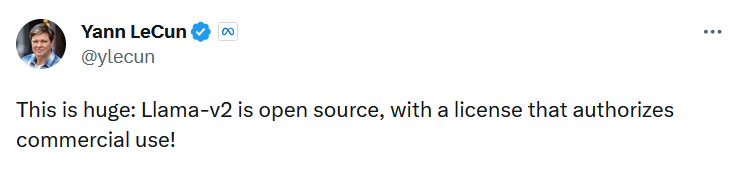
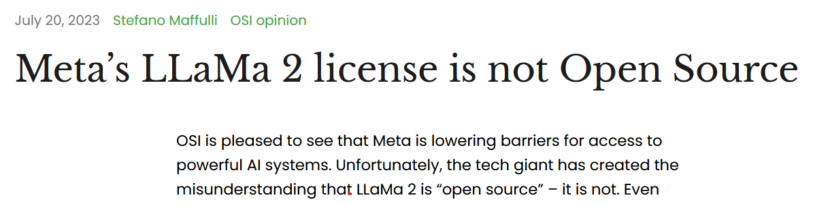
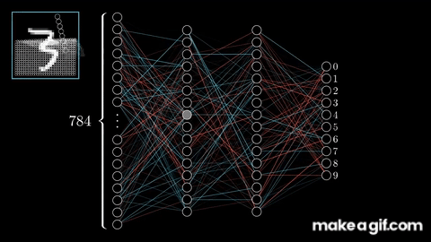
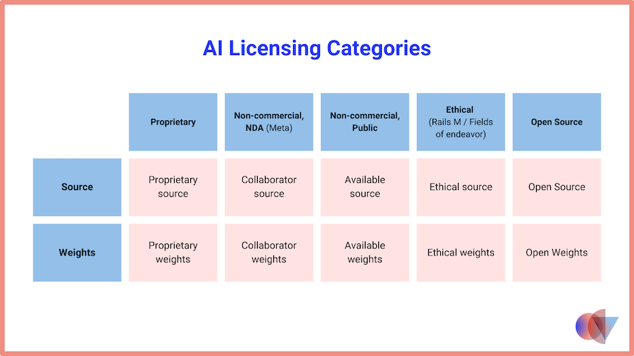
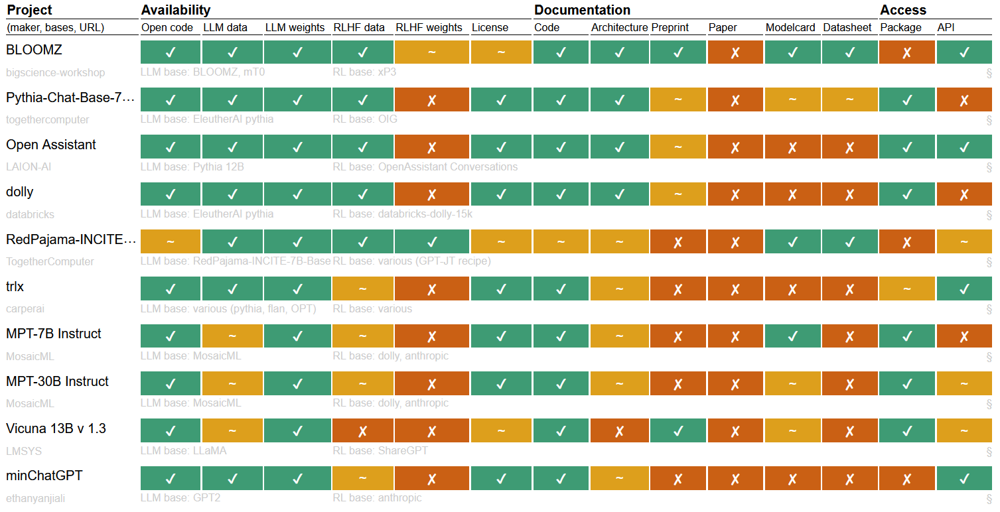
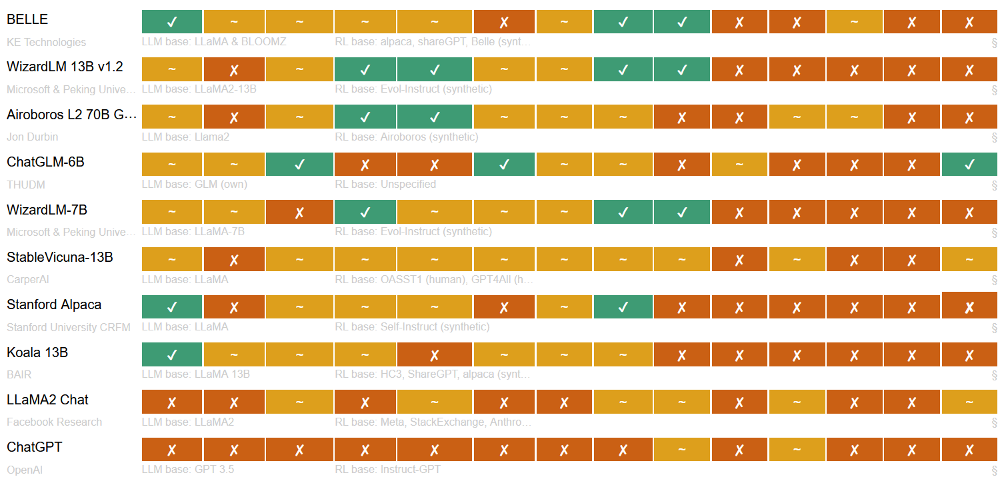

<!DOCTYPE html>
<html lang="en">
  <head>
    <meta charset="utf-8" />
    <meta name="viewport" content="width=device-width, initial-scale=1.0, maximum-scale=1.0, user-scalable=no" />

    <title>Open-Weight</title>
    <link rel="shortcut icon" href="./favicon.ico" />
    <link rel="stylesheet" href="./dist/reset.css" />
    <link rel="stylesheet" href="./dist/reveal.css" />
    <link rel="stylesheet" href="./dist/theme/night.css" id="theme" />
    <link rel="stylesheet" href="./css/highlight/monokai.css" />


  </head>
  <body>
    <div class="reveal">
      <div class="slides"><section  data-markdown><script type="text/template">

## LLMs Openness
</script></section><section  data-markdown><script type="text/template">
### About Me

<div style="display:flex;">
<div style="flex-grow: 1">
<ul>
<li>Ahmad Fanaei</li>
<li>Programmer since 2006</li>
<li>CTO at Torob since 2017</li>
<li>We are hiring! <a href="https://jobs.torob.com/">jobs.torob.com</a></li>
</ul>
</div>
<div>

<br/>

</div>
</div>
</script></section><section  data-markdown><script type="text/template">
<!-- .slide: data-transition="slide" data-background="#b5533c" -->
## Introduction
</script></section><section  data-markdown><script type="text/template">
<figure>
    
    <figcaption><a href="https://twitter.com/ylecun/status/1681336284453781505">link</a></figcaption>
</figure>
</script></section><section  data-markdown><script type="text/template">
<figure>
    
    <figcaption><a href="https://blog.opensource.org/metas-llama-2-license-is-not-open-source/">link</a></figcaption>
</figure>
</script></section><section  data-markdown><script type="text/template">
> ... is greater than 700 million monthly active users in the 
preceding calendar month, you must request a license from Meta ...
</script></section><section  data-markdown><script type="text/template">
1. Violate the law or others’ rights.
2. Engage in, promote, incite, facilitate, or assist in the planning or development of activities that present a risk of death or bodily harm to individuals.
3. Intentionally deceive or mislead others.
4. Fail to appropriately disclose to end users any known dangers of your AI system.

<a href="https://ai.meta.com/llama/use-policy/">use-policy</a>
</script></section><section  data-markdown><script type="text/template">
### neural network (NN)
- Training (data) -> (weights)
- Inference (weights) -> (result)
</script></section><section  data-markdown><script type="text/template">

</script></section><section  data-markdown><script type="text/template">
### Components
- Data
- Model weights
- Source code
</script></section><section  data-markdown><script type="text/template">
### Large Language Model
- very large NN
- trained on all available written data
</script></section><section  data-markdown><script type="text/template">

</script></section><section  data-markdown><script type="text/template">
### Review
- NN
- LLMs
- Components of NN
</script></section><section  data-markdown><script type="text/template">
<!-- .slide: data-transition="slide" data-background="#b5533c" -->
## Why Openness Matter
</script></section><section  data-markdown><script type="text/template">
### AI Safety and the Age of Dislightenment
- Power imbalance
- Maybe opensource is the key
- Security through obscurity


<a href="https://www.fast.ai/posts/2023-11-07-dislightenment.html#open-source-and-a-new-era-of-ai-enlightenment">link</a>
</script></section><section  data-markdown><script type="text/template">
### We Have No Moat, And Neither Does OpenAI

- Things we consider “major open problems” are solved and in people’s hands today
- They are doing things with 13B params that we struggle with 540B
- Who would pay for a Google product with usage restrictions if there is a free, high quality alternative without them?

<a href="https://www.semianalysis.com/p/google-we-have-no-moat-and-neither">link</a>
</script></section><section  data-markdown><script type="text/template">
<!-- .slide: data-transition="slide" data-background="#b5533c" -->
## open source and LLMs
</script></section><section  data-markdown><script type="text/template">
### Why Ai licensing is complex
- AI has multiple components that are licensed differently.
- AI also poses socio-ethical consequences
</script></section><section  data-markdown><script type="text/template">
### NNWs is not Source Code
- The software community created the open source concept as a means to make source code available to anyone for use, modification, and distribution
- NNWs are different. They represent the 'knowledge' an artificial neural network has learned and are often stored as large matrices of numbers.
</script></section><section  data-markdown><script type="text/template">
<!-- .slide: data-transition="slide" data-background="#b5533c" -->
## Open-Weight
</script></section><section  data-markdown><script type="text/template">
- allow all recipients to use for any purpose.
- allow all recipients to modify for any purpose.
- The license must not discriminate against any user, industry, or purpose.
- The model must be provided along with access to the NNWs.
- The software used to train the model must be provided under an open source license
- The license must allow all recipients to provide the model, or modifications of the model, to others.
- The license must allow any license notices or NNWs to be provided via an online reference.

<a href="https://github.com/Open-Weights/Definition">link</a></script></section><section  data-markdown><script type="text/template">
<figure>
    
    <figcaption><a href="https://opencoreventures.com/blog/2023-06-27-ai-weights-are-not-open-source/">link</a></figcaption>
</figure>
</script></section><section  data-markdown><script type="text/template">
### why its not good

The question is whether or not open weights are enough for a model to be called open source; a software analogy would be a project releasing its binaries without the source code to re-build it from scratch.
</script></section><section  data-markdown><script type="text/template">
<figure>
    
    <figcaption><a href="https://opening-up-chatgpt.github.io/">link</a></figcaption>
</figure>
</script></section><section  data-markdown><script type="text/template">
<figure>
    
    <figcaption><a href="https://opening-up-chatgpt.github.io/">link</a></figcaption>
</figure>
</script></section><section  data-markdown><script type="text/template">
<!-- .slide: data-transition="slide" data-background="#b5533c" -->
## Other Gotchas
</script></section><section  data-markdown><script type="text/template">
### What is the licence of AI output

- if you use photoshop to create a photo, that photo is belong to you
- what if you use stable diffusion to create an image, to whom the generated photo blongs
  - the original content creator whose work was used to train ai
  - the company who created the ai model
  - the person who used the model to create a photo
</script></section><section  data-markdown><script type="text/template">
### Plligrism or Copyright Infringement
- Github-copilot: emmits non-permissive license code <a href="https://codeium.com/blog/copilot-trains-on-gpl-codeium-does-not">link</a>
</script></section><section  data-markdown><script type="text/template">
## thank you
</script></section></div>
    </div>

    <script src="./dist/reveal.js"></script>

    <script src="./plugin/markdown/markdown.js"></script>
    <script src="./plugin/highlight/highlight.js"></script>
    <script src="./plugin/zoom/zoom.js"></script>
    <script src="./plugin/notes/notes.js"></script>
    <script src="./plugin/math/math.js"></script>
    <script>
      function extend() {
        var target = {};
        for (var i = 0; i < arguments.length; i++) {
          var source = arguments[i];
          for (var key in source) {
            if (source.hasOwnProperty(key)) {
              target[key] = source[key];
            }
          }
        }
        return target;
      }

      // default options to init reveal.js
      var defaultOptions = {
        controls: true,
        progress: true,
        history: true,
        center: true,
        transition: 'default', // none/fade/slide/convex/concave/zoom
        slideNumber: true,
        plugins: [
          RevealMarkdown,
          RevealHighlight,
          RevealZoom,
          RevealNotes,
          RevealMath
        ]
      };

      // options from URL query string
      var queryOptions = Reveal().getQueryHash() || {};

      var options = extend(defaultOptions, {}, queryOptions);
    </script>


    <script>
      Reveal.initialize(options);
    </script>
  </body>
</html>
